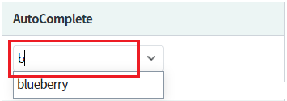
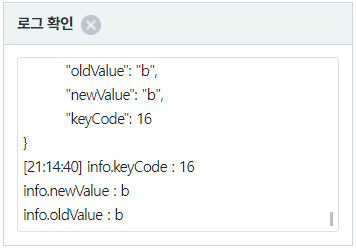
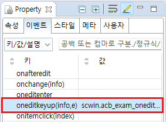
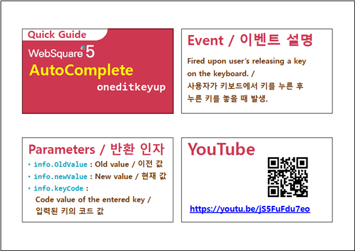

검색어 입력창에서 키를 눌렀다 떼었을 때(oneditkeyup)의 이벤트 핸들러를 등록하는 예제입니다. 내부적으로 keyup 이벤트를 사용하며, key 정보 이외에 컴포넌트의 이전 value와 입력 후 value를 확인 할 수 있습니다.
이 이벤트는 Enter 키를 눌렀을 때는 발생되지 않습니다.
Enter 키 입력 시 이벤트를 등록하고자 하는 경우는 이벤트 oneditenter를 등록해야 합니다.
참고 링크 : [AutoComplete] 입력창에서 Enter 또는 Tab 키가 입력되었을 때 이벤트 핸들러 등록하기
검색어 입력창에서 Enter 또는 Tab 키를 눌렀을 때 Key 정보 출력하기
컴포넌트의 검색어 입력창에서 키를 누릅니다.
그림 1.브라우저(Chrome) 실행 예시 - 키 입력

컴포넌트에서 포커스가 빠져나가고 로그 확인 영역에 이벤트 정보가 출력됩니다. (브라우저의 개발자 도구의 콘솔(console)탭을 통해 자세한 이벤트 정보를 확인 할 수 있습니다)
그림 2.로그 출력 영역 참고 이미지

예제 파일에서는 핸들러로 사용할 함수명을 scwin.acb_exam_oneditkeyup로 정의하였습니다.
oldValue, newValue, keyCode를 포함한 JSON 객체가 인자 할당됩니다.
그림 3.웹스퀘어5 SP5 스튜디오의 Property View(속성창)의 이벤트 탭 예시

스크립트 탭에서 핸들러 함수(scwin.acb_exam_oneditkeyup)를 정의합니다.
/** * acb_exam 컴포넌트의 이벤트 oneditkeyup 핸들러 */ scwin.acb_exam_oneditkeyup = function(info,e) { //웹스퀘어 엔진에서 할당한 값 var _keyCode = info.keyCode; //입력된 키의 코드값 var _newValue = info.newValue; //키가 입력된 후의 값 var _oldValue = info.oldValue; //키가 입력되기 이전의 값 //Key Event 객체 var tmpKeyCode = e.keyCode; var tmpWhich = e.which; var tmpCode = e.code; var tmpKey = e.key; //로직 작성 };
oneditkeyup
[웹스퀘어5 SP5 개발 가이드] AutoComplete
링크 : https://docs1.inswave.com/sp5_user_guide/8df43d1f59fab704#135c147277dd42f3
[웹스퀘어5 SP5 개발 가이드] AutoComplete oneditkeyup
링크 : https://docs1.inswave.com/sp5_user_guide/8df43d1f59fab704#3fb61dd23dac906a
AutoComplete oneditkeyup
링크 : https://youtu.be/jS5FuFdu7eo
